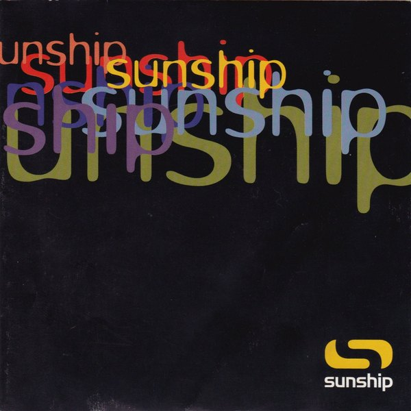
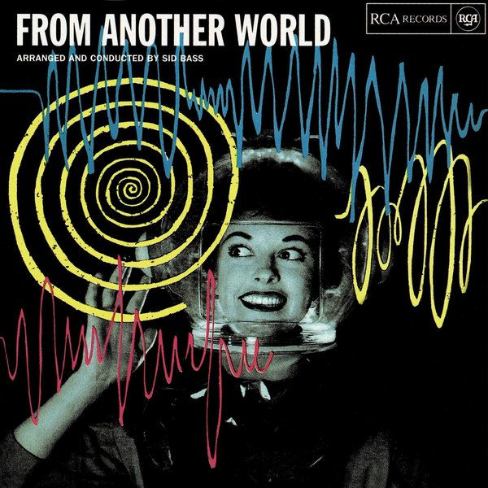
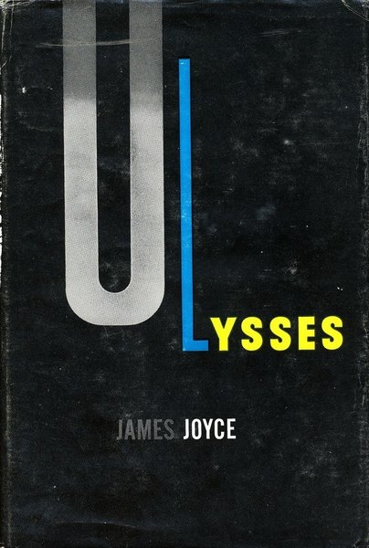
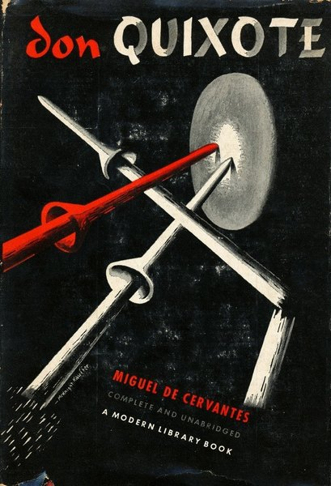

CRVI000125Yusaku Kamekura - Expo '70
Japan World Exposition, Osaka · 'Progress and Harmony for Mankind' · 1970
Japan World Exposition, Osaka · 'Progress and Harmony for Mankind' · 1970

CRVI000633D.W. Pine, Edel Rodriguez - Total Meltdown
TIME, October 24 2016 · 2016
TIME, October 24 2016 · 2016

CRVI000263Roman Cieślewicz - Polish Fashion
Advertising Poster · 1972 · 1972
Advertising Poster · 1972 · 1972

CRVI000333100 Proof (Aged In Soul) - 100 Proof Aged In Soul
Designer unknown · Hot Wax · 1972
Designer unknown · Hot Wax · 1972

CRVI000345Sly & The Family Stone - A Whole New Thing (Bonus Tracks Edition) [2007 Remaster]
Designer unknown · Epic · 1967
Designer unknown · Epic · 1967

CRVI000189Unknown - Nope
Reaction GIF cut from TMZ footage · Rihanna leaving a club · 49 frames, 3.9s loop · 2014
Reaction GIF cut from TMZ footage · Rihanna leaving a club · 49 frames, 3.9s loop · 2014

CRVI000267Unforscene - Fingers And Thumbs
Designer unknown · Tru Thoughts · 2008
Designer unknown · Tru Thoughts · 2008

CRVI000213Unknown - Stare
Reaction GIF · Walton Goggins as Rick Hatchett, The White Lotus · 72 frames, 3.6s loop · 2025
Reaction GIF · Walton Goggins as Rick Hatchett, The White Lotus · 72 frames, 3.6s loop · 2025

CRVI000076Herva - Kila
Designer unknown · 2015
Designer unknown · 2015

CRVI000656Unknown - How Blackberry Became a Relic
Bloomberg Businessweek, December 9–1 Photographs from various museums and art libraries 2013 · 2013
Bloomberg Businessweek, December 9–1 Photographs from various museums and art libraries 2013 · 2013

CRVI000206Unknown - Uhhh
Reaction GIF · 46 frames, 4.6s loop
Reaction GIF · 46 frames, 4.6s loop

CRVI000457Janet Halverson - JFK and LBJ
Cover for Tom Wicker · Pelican
Cover for Tom Wicker · Pelican

CRVI000360O.V. WRIGHT - Into Something (Can't Shake Loose)
Designer unknown · Hi · 1977
Designer unknown · Hi · 1977

CRVI000653Cover by Michael Marcelle - The Wall Street Issue
Vice, December 2014 · 2014
Vice, December 2014 · 2014

CRVI000029Squarepusher - Feed Me Weird Things
Designed by Johnny Clayton, Tom Jenkinson · Rephlex · 1996
Designed by Johnny Clayton, Tom Jenkinson · Rephlex · 1996

CRVI000728Raglani - Husk
Back cover · designed by Robert Beatty
Back cover · designed by Robert Beatty

CRVI000126Shigeo Fukuda - The World of Shigeo Fukuda in U.S.A.
M.H. de Young Memorial Museum, San Francisco · Junior Art Center, Los Angeles · Santa Barbara Museum of Art · 1971
M.H. de Young Memorial Museum, San Francisco · Junior Art Center, Los Angeles · Santa Barbara Museum of Art · 1971

CRVI000723Burning Star Core - Challenger
Front cover · designed by Robert Beatty
Front cover · designed by Robert Beatty

CRVI000240Sunship - Sunship
Designer unknown · Filter · 1997
Designer unknown · Filter · 1997
CRVI000092Juan Blanco - Musica Electroacustica
Designer unknown · Areito
Designer unknown · Areito

CRVI000350The Brides of Funkenstein - Funk Or Walk
Designer unknown · Warner · 1978
Designer unknown · Warner · 1978

CRVI000100Sid Bass - From Another World
Designer unknown · Vik · 1956
Designer unknown · Vik · 1956

CRVI000310Doris Norton - Artificial Intelligence
Designer unknown · Globo · 1985
Designer unknown · Globo · 1985

CRVI000510Albert Ayler - The Last Album
Designed by Woody Woodward Grafix · Impulse! · 1971
Designed by Woody Woodward Grafix · Impulse! · 1971

CRVI000372Maze featuring Frankie Beverly - Can't Stop the Love (2004 Remaster)
Designer unknown · Capitol · 1985
Designer unknown · Capitol · 1985

CRVI000401PAUL RANDOLPH - This Is What It Is
Designer unknown · Mahogani Music · 2004
Designer unknown · Mahogani Music · 2004

CRVI000001Paul Jebanasam - Rites
Designed by Alex Digard · 2013
Designed by Alex Digard · 2013

CRVI000274DRC Music - Kinshasa One Two
Designer unknown · Warp · 2011
Designer unknown · Warp · 2011

CRVI000084Leyland Kirby - Eager To Tear Apart The Stars
Designer unknown · History Always Favours The Winners · 2011
Designer unknown · History Always Favours The Winners · 2011

CRVI000046Demdike Stare - Voices Of Dust
Designed by Radu Prepeleac · 2010
Designed by Radu Prepeleac · 2010

CRVI000044John Bender - Pop Surgery
Designed by Patrick Spenlau · Record Sluts · 1983
Designed by Patrick Spenlau · Record Sluts · 1983

CRVI000002Sote - Architectonic
Artwork by Arash Bolouri · Morphine Records · 2014
Artwork by Arash Bolouri · Morphine Records · 2014

CRVI000186E. McKnight Kauffer - Ulysses
Dust jacket for James Joyce's Ulysses · Random House, New York · 1946
Dust jacket for James Joyce's Ulysses · Random House, New York · 1946

CRVI000188E. McKnight Kauffer - Don Quixote
Dust jacket for Miguel de Cervantes' Don Quixote · The Modern Library, New York · 1940
Dust jacket for Miguel de Cervantes' Don Quixote · The Modern Library, New York · 1940
CRVI000664Unknown - The New Yorker, April 9, 2007
The New Yorker, April 9, 2007 · 2007
The New Yorker, April 9, 2007 · 2007

CRVI000060Tito - Quetzalcóatl
Designed by Tito, Manuel Fornos · Discos Tiabi · 1977
Designed by Tito, Manuel Fornos · Discos Tiabi · 1977